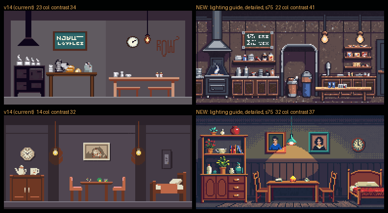
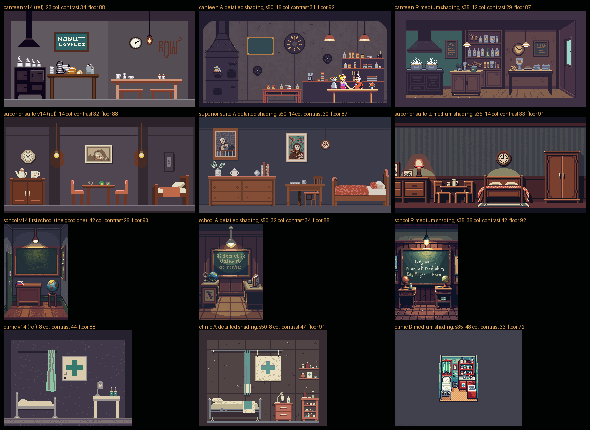
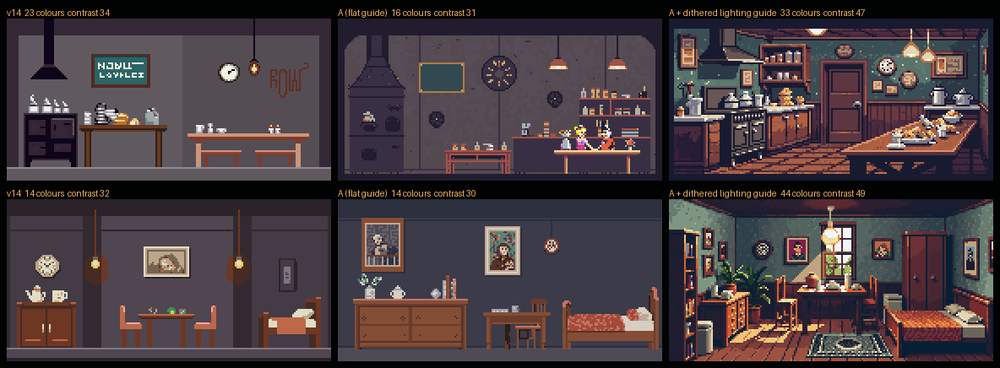
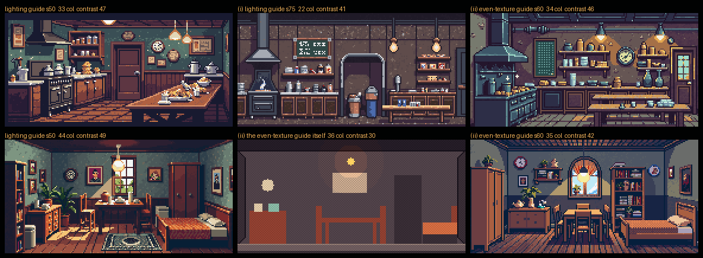

Detail calibration v15 — getting richness back
Feedback on v14: the rooms have simple backgrounds, a flat look, too little colour and shadow/highlight variation, and no dithering. The first school layout was the only one that looked right. This round finds out why, and fixes it without losing the flat side view.
The cause is the guide, not the prompt. The blockout guides are drawn in about 12 flat colours, and PixelLab carries the start image's palette into the result. The v14 clinic came back with 8 colours, the superior suite with 14. Rewriting the prompt for detail and dithering alone barely helps (column A below).
The fix: a lit, dithered guide. The same blockout, redrawn with four lighting bands and an ordered dither between them, so the guide carries ~35 colours and a warm-to-cool falloff. Rooms come back with 22–44 colours and much stronger contrast, dithered shading and busy, textured walls.
The catch: perspective. At strength 50 the rich guide pulls rooms into interiors seen from inside (floor planes, a window). At strength 75 it holds the flat side view and keeps the richness. That is the recommended recipe.
Cost of this calibration: 14 generations.
The recipe that works
v14 on the left, the new recipe on the right: lit dithered guide, shading: detailed shading, detail: highly detailed, strength 75, and a
prompt that asks for dithered shading, strong light and shadow, colour variation and a textured back wall. It still ends with the flat-elevation and no-people tail.

Step 1 — prompt and shading knobs only
A: detailed shading at strength 50. B: medium shading at strength 35. Colour counts stay at 8–16 with the flat guide. B has more freedom, but the canteen turns into a room seen from inside and the clinic collapses into a small box.

Step 2 — the lit dithered guide
Same prompt and seed as A, only the guide changed. Colours and contrast jump, but at strength 50 both rooms become perspective interiors.

Step 3 — holding the flat view
(i) the lit guide at strength 75: flat and rich. (ii) an evenly textured guide with lamp pools but no top-to-bottom falloff, at strength 60: still rich, but the floor plane comes back, and the suite gains a window with sky (banned). Keep (i).
